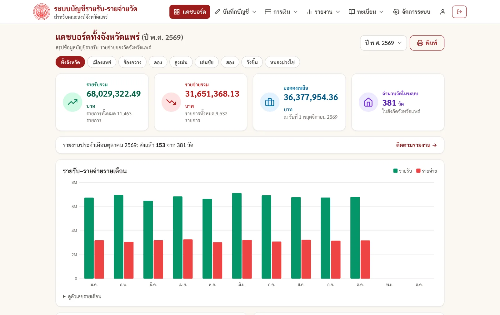

📒 บัญชีรายรับ-รายจ่าย
บันทึก แก้ไข ลบ (เก็บประวัติ) แยกหมวด ผูกกับวัด ใช้ได้หลายบัญชี: เงินสดและเงินฝากธนาคารหลายบัญชี เลือกธนาคารพร้อมโลโก้ แนบภาพหน้าบุ๊คแบงก์ แนบรูป/PDF ใบเสร็จและสลิปกับแต่ละรายการ โอน/ฝาก/ถอนระหว่างบัญชีได้
สำหรับคณะสงฆ์ระดับจังหวัด · ติดตั้งบนเซิร์ฟเวอร์ของคุณเอง
ระบบบัญชีของวัดที่ครบวงจร ตั้งแต่บันทึกประจำวัน (รวมบนมือถือ) ตรวจสอบ ปิดงวด ไปจนถึงรายงานประจำเดือนที่เจ้าคณะตำบลและอำเภอรับรอง พร้อมแดชบอร์ดภาพรวม อนุโมทนาบัตร งบประมาณ และกระทบยอดธนาคาร — พัฒนาขึ้นสำหรับคณะสงฆ์จังหวัดแพร่ และนำไปใช้กับจังหวัดอื่นได้ด้วยการนำเข้าทะเบียนวัดจากไฟล์ Excel

ออกแบบตามงานบัญชีวัดจริง ตั้งแต่บันทึกประจำวันถึงรายงานที่ต้องส่ง
บันทึก แก้ไข ลบ (เก็บประวัติ) แยกหมวด ผูกกับวัด ใช้ได้หลายบัญชี: เงินสดและเงินฝากธนาคารหลายบัญชี เลือกธนาคารพร้อมโลโก้ แนบภาพหน้าบุ๊คแบงก์ แนบรูป/PDF ใบเสร็จและสลิปกับแต่ละรายการ โอน/ฝาก/ถอนระหว่างบัญชีได้
ฟอร์มสั้น ปุ่มใหญ่ ใช้ตอนรับหรือจ่ายเงินหน้างาน บันทึกผ่านตัวเดียวกับหน้าบัญชี ตรวจสอบและล็อกงวดเหมือนกันทุกประการ
ตั้งค่าน้ำ ค่าไฟ เงินเดือน เงินสังฆทานรายเดือนไว้ครั้งเดียว เมื่อถึงกำหนดระบบแจ้งให้ตรวจ แก้จำนวนเงิน แล้วกดบันทึกหรือข้ามเดือนนั้น — ไม่บันทึกเองโดยไม่ถาม
รายรับรวม รายจ่ายรวม ยอดคงเหลือ กราฟรายเดือน หมวดสูงสุด และสถานะการส่งรายงาน เลือกดูทั้งจังหวัดหรือรายอำเภอ
บัญชีเงินสด บัญชีเงินฝากธนาคาร และรายงานเงินคงเหลือ ตามแบบฟอร์มของวัด พิมพ์หรือบันทึกเป็น PDF มีช่องลงนามเจ้าอาวาสและไวยาวัจกร พร้อมงบแสดงรายรับ-รายจ่ายประจำปีเทียบปีก่อน
วัดกดส่งรายงานประจำเดือน เจ้าคณะตำบลตรวจและรับรอง ต่อด้วยอำเภอรับรอง หรือส่งกลับแก้ไขพร้อมเหตุผลได้ทุกขั้น หน้าติดตามแสดงวัดที่ส่งแล้ว ยังไม่ส่ง รอรับรอง ส่งอีเมลเตือนวัดที่ค้าง และส่งออก CSV
เมื่อตรวจและส่งรายงานแล้วปิดงวดเพื่อล็อกตัวเลข แก้หรือลบรายการของเดือนนั้นไม่ได้ ต้องเปิดงวดพร้อมระบุเหตุผลและมีบันทึกประวัติ ป้องกันตัวเลขเปลี่ยนหลังส่งรายงาน
ออกจากรายรับหมวดบริจาคได้ทันที เลขที่ต่อเนื่องรายวัดรายปี แปลงจำนวนเงินเป็นตัวอักษรไทย พิมพ์ B5 แนวนอน พร้อม QR ตรวจสอบความถูกต้อง
ตั้งงบรายหมวดเทียบกับผลจริง เตือนเมื่อใกล้เกินงบ แยกเงินตามวัตถุประสงค์ เช่น กฐิน ผ้าป่า สร้างอาคาร พร้อมเป้ายอดและยอดสะสม
กรอกยอดตาม statement เทียบกับยอดในระบบ แสดงส่วนต่างและรายการค้าง นำเข้ารายการจากไฟล์ธนาคาร CSV/Excel โดยไม่นำเข้าซ้ำ
ที่ดิน อาคาร ครุภัณฑ์ ยานพาหนะ พร้อมวันที่ได้มา มูลค่า สภาพ ผู้รับผิดชอบ รูป และผูกกับรายจ่ายที่ซื้อหรือซ่อม
เก็บเฉพาะผู้ที่ให้ความยินยอมตาม PDPA ที่อยู่และเบอร์โทรเข้ารหัส ค้นผู้บริจาคเดิมแล้วเติมที่อยู่ในอนุโมทนาบัตรอัตโนมัติ ถอนความยินยอมได้
เจ้าอาวาส พระลูกวัด ไวยาวัจกร เลขบัตรประชาชนเข้ารหัส แสดงแบบปิดบัง ต้องยืนยันความยินยอมตาม PDPA ก่อนบันทึก
อัปโหลดไฟล์ .xlsx จาก binfo.onab.go.th ได้ตรง ๆ ระบบสร้างอำเภอ วัด และบัญชีแอดมินวัดให้ มีหน้าสรุปให้ตรวจก่อนบันทึกจริง ใช้กับจังหวัดอื่นได้
แอดมินหลัก · เจ้าคณะจังหวัด (ดูอย่างเดียว) · แอดมินอำเภอ · เจ้าคณะตำบล · แอดมินวัด แต่ละคนเห็นเฉพาะส่วนของตน ยืนยันตัวตน 2 ชั้นทางอีเมล มีประวัติการใช้งาน (audit log)
ตัวช่วยติดตั้งบนเว็บเลือกจังหวัดของตน (ครบ 77 จังหวัด) แล้วสร้างอำเภอและผู้ใช้ให้อัตโนมัติ มีสำรองข้อมูลอัตโนมัติเป็นไฟล์ .sql.gz และเครื่องมือกู้คืน โดยตรวจกุญแจเข้ารหัสให้
ทุกขั้นตอนอยู่ในระบบเดียว และมีประวัติให้ตรวจสอบย้อนหลัง
ภาพจากระบบรุ่นปัจจุบันด้วยข้อมูลสมมติ (ชื่อวัด บุคคล และตัวเลขในภาพไม่มีอยู่จริง)
install.php ทำตามขั้นตอนชุดติดตั้งพร้อมใช้ — ไม่มีชุดทดสอบ รหัสผ่านเริ่มต้น หรือข้อมูลของเครื่องผู้พัฒนา
——ตรวจไฟล์หลังดาวน์โหลด: sha256sum -c หรือเทียบค่าด้านบน
pdo_mysql sodium gd fileinfo mbstring และ zip (สำหรับนำเข้า Excel)โค้ดของระบบเผยแพร่ภายใต้ สัญญาอนุญาต MIT (ไม่รวมตราสัญลักษณ์ รูปผู้พัฒนา และส่วนประกอบของบุคคลที่สามตามสัญญาของแต่ละรายการ) · ฟอนต์ JS Chanok ที่ใช้พิมพ์อนุโมทนาบัตรเผยแพร่ภายใต้ GNU GPL v2 (ข้อความสัญญาอนุญาต) · ฐานข้อมูลจังหวัดใช้ข้อมูลจาก kongvut/thai-province-data (MIT)
.zip แล้วอัปโหลดโฟลเดอร์ tfms ขึ้นโฮสต์ (ตั้ง document root ให้ชี้ที่โฟลเดอร์นี้)https://โดเมนของคุณ/install.php — ตัวช่วยตรวจความพร้อม สร้างตาราง ให้เลือกจังหวัดที่ดูแล อัปโหลดไฟล์ Excel ทะเบียนวัดของจังหวัด และตั้งรหัสผ่านแอดมินหลักassets/img/logo.svg และสำรอง storage/app.key ไว้ที่ปลอดภัยรายละเอียดเต็มอยู่ใน README.md และ UPGRADE.md ในชุดติดตั้ง
อยู่ในฐานข้อมูลบนเซิร์ฟเวอร์ของคุณเองทั้งหมด ไม่มีการส่งข้อมูลไปยังผู้พัฒนาหรือบริการภายนอก (ยกเว้นฟอนต์ Sarabun ที่โหลดจาก Google Fonts)
เข้ารหัสด้วย libsodium ก่อนเก็บ แสดงแบบปิดบัง และดูเลขเต็มได้เฉพาะแอดมินหลักกับแอดมินวัดนั้น พร้อมบันทึกประวัติ ต้องสำรองไฟล์ storage/app.key เพราะถ้าหายจะถอดรหัสไม่ได้
ได้ ระบบรับไฟล์ Excel ทะเบียนวัดรูปแบบเดียวกับ binfo.onab.go.th แล้วสร้างอำเภอและวัดให้ โควตาผู้ใช้ระดับจังหวัดปรับตามจำนวนอำเภอเอง แต่ตราสัญลักษณ์ระบบและข้อความบางส่วนยังเป็นของจังหวัดแพร่ ต้องเปลี่ยนเอง
ชุดติดตั้งมีไฟล์ sql/migrations/ และเอกสาร UPGRADE.md บอกลำดับการอัปเกรดโดยไม่ลบข้อมูลเดิม
ได้ มีหน้า "บันทึกด่วน" ออกแบบสำหรับมือถือ ฟอร์มสั้นปุ่มใหญ่ ใช้บันทึกรายรับ-รายจ่ายหน้างาน ส่วนหน้าอื่นเปิดบนมือถือได้ตามปกติ
ไม่ ระบบแจ้งว่ามีรายการถึงกำหนด ผู้ใช้ตรวจ แก้จำนวนเงินได้ แล้วกดบันทึกหรือข้ามเดือนนั้นเอง เพื่อไม่ให้ตัวเลขผิดโดยไม่รู้ตัว (ค่าน้ำค่าไฟแต่ละเดือนไม่เท่ากัน)
แอดมินหลักดาวน์โหลดไฟล์สำรอง .sql.gz และตั้งสำรองอัตโนมัติได้ที่หน้าจัดการระบบ มีเครื่องมือกู้คืนและตรวจกุญแจเข้ารหัสให้ ควรเก็บสำเนาไว้นอกเครื่องเซิร์ฟเวอร์ด้วย
ต้องอัปโหลดไฟล์ขึ้นโฮสต์และสร้างฐานข้อมูลเป็น หากโฮสต์รองรับ PHP และ MySQL ตัวช่วยติดตั้งจะพาทำส่วนที่เหลือ
Kittiphun Ruttanakorn
นักวิชาการคอมพิวเตอร์
มหาวิทยาลัยมหาจุฬาลงกรณราชวิทยาลัย วิทยาเขตแพร่
Network · Server · Full-Stack
พัฒนาระบบนี้สำหรับงานบัญชีวัดของคณะสงฆ์จังหวัดแพร่ และเผยแพร่ให้จังหวัดอื่นนำไปใช้ได้ — พบปัญหาหรือมีข้อเสนอแนะ ติดต่อได้ตามช่องทางด้านบน